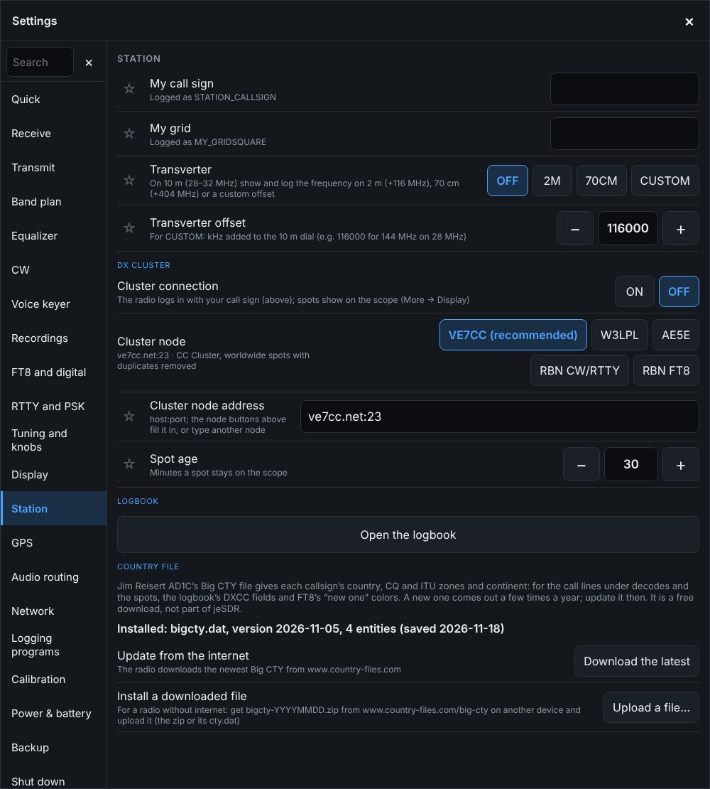
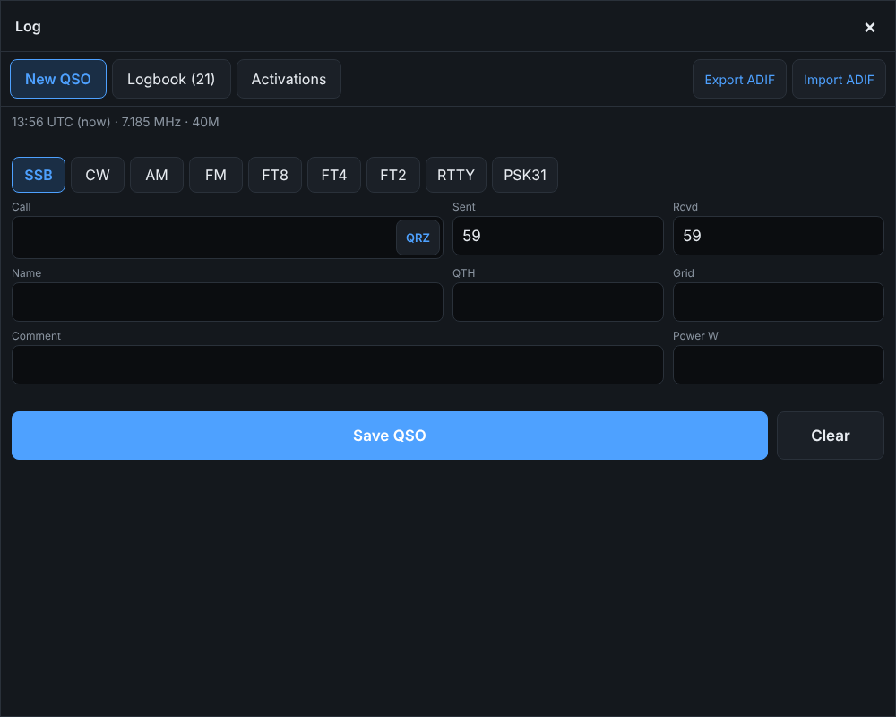
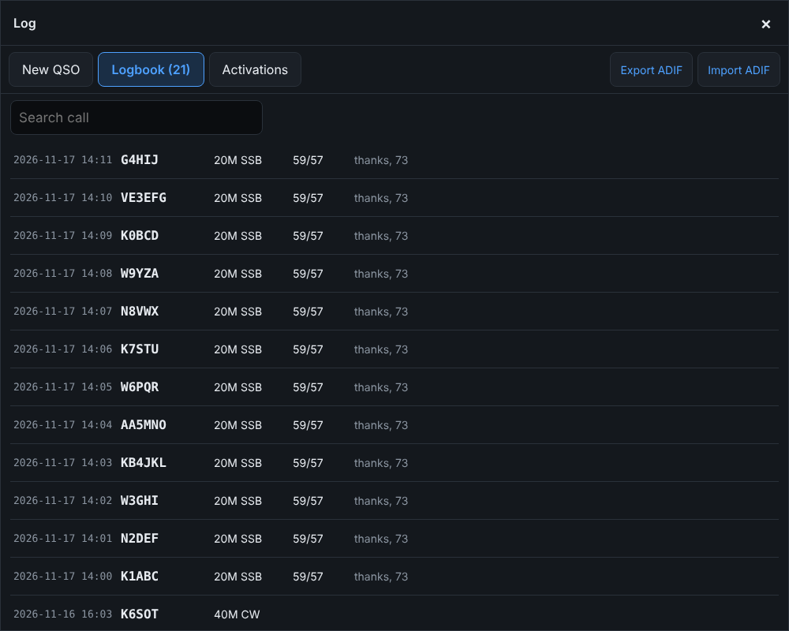
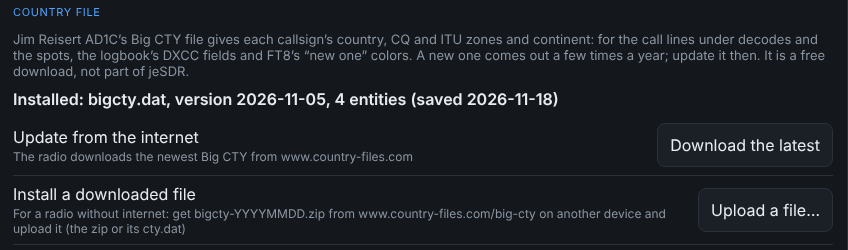
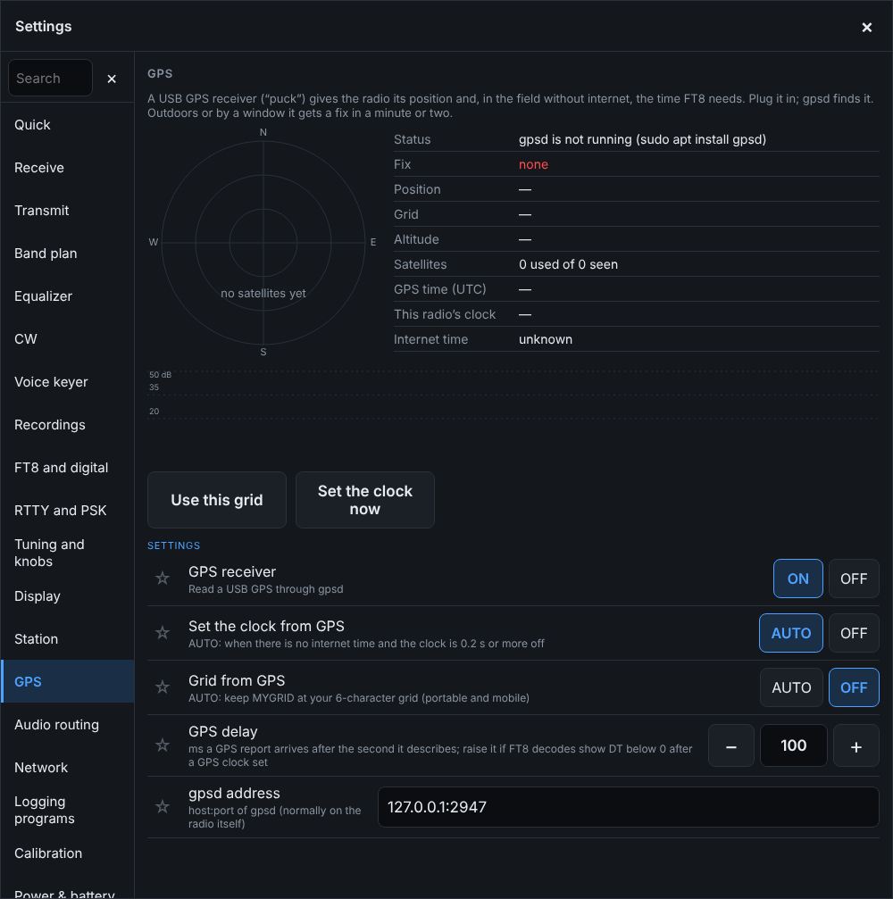

Station, logbook, country file and GPS#
Station#
More → Station: your call sign and grid, a transverter, the DX cluster and the logbook.

- My call sign and My grid are used by FT8 and the other digital
modes, the macros (
{MYCALL},{MYGRID}), the log (STATION_CALLSIGN,MY_GRIDSQUARE), distances and bearings, and the DX cluster login. Set them first. - Transverter: with a 2 m or 70 cm transverter on the 10 m output, set 2M (+116 MHz) or 70CM (+404 MHz), or CUSTOM with Transverter offset in kHz. While the dial is on 10 m (28–32 MHz) the header, band button, scope, ribbons and log show the on-air frequency, and the keypad takes it too (type 144.174 and the radio tunes 28.174). 10 m reaches 32 MHz for this.
DX cluster#
Turn Cluster connection ON (it needs My call sign). The radio logs in
to a telnet cluster node, ve7cc.net:23 by default; the node buttons fill in
others, or type any DXSpider, AR-Cluster or CC Cluster node as host:port.
Spots appear as labels under the band ribbons at their frequency: tap one to
tune there, hold it for the station's details. They fade and drop after
Spot age minutes. Console: cluster status|reconnect|send <text> (for
example a node filter command).
| Setting | Console name | Default | Values | What it does |
|---|---|---|---|---|
| My call sign | MYCALL | (empty) | text | Logged as STATION_CALLSIGN |
| My grid | MYGRID | (empty) | text | Logged as MY_GRIDSQUARE |
| Transverter | XVTR | OFF | OFF, 2M, 70CM, CUSTOM | On 10 m (28–32 MHz) show and log the frequency on 2 m (+116 MHz), 70 cm (+404 MHz) or a custom offset |
| Transverter offset | XVTR_OFS | 116000 | 0–9000000 | For CUSTOM: kHz added to the 10 m dial (e.g. 116000 for 144 MHz on 28 MHz) |
DX cluster
| Setting | Console name | Default | Values | What it does |
|---|---|---|---|---|
| Cluster connection | CLUSTER | OFF | ON, OFF | The radio connects to a DX cluster node for spots |
| Cluster node address | CLUSTER_HOST | ve7cc.net:23 | text | host:port; the node buttons above fill it in, or type another node |
| Spot age | CLUSTER_AGE | 30 | 5–120 | Minutes a spot stays on the scope |
Logbook#
An ADIF log kept on the radio (~/jeSDR/data/jesdr_log.adi), so every
screen sees the same log. Open it with Log on the control strip.

- New QSO: the time (UTC, taken when you start typing the call), frequency, band and mode come from the radio; mode chips pick SSB, CW, AM, FM, FT8, FT4, FT2, RTTY or PSK31. RST defaults suit the mode and the power is the peak of your last transmission. While you type a call it shows whether you have worked it before and fills in name, QTH and grid from the last QSO. Under the call: its country, continent, zones, and distance and bearing from your grid. QRZ opens its qrz.com page in a new tab (no QRZ login is kept on the radio).
- Logbook: newest first; search by call; tap a QSO to edit or delete it.
- Export ADIF downloads the log; Import ADIF merges a file from another program, skipping QSOs already logged.
- Activations lists every park, summit or WWFF area per UTC day and
downloads the file each program takes: POTA and WWFF an ADIF file
(
CALL@REF-YYYYMMDD.adi), SOTA its CSV. A POTA day under 10 QSOs is marked.

New QSOs can also go to other logging programs as they are made; see Connecting other programs.
Country file#
Callsign lookups (country, zones and continent under decodes and spots, the log's DXCC fields, FT8's "new one" colors) use Jim Reisert AD1C's Big CTY file. It is a free download, not part of jeSDR; the installer fetches it, and a new one comes out a few times a year.

The Country file section at the bottom of More → Station shows the version in use (search the settings for "country" to jump there).
- Download the latest: the radio fetches the newest Big CTY from www.country-files.com.
- Upload a file…: for a radio without internet, download
bigcty-YYYYMMDD.zipfrom www.country-files.com/big-cty on another device and upload it here (the zip, or thecty.datinside it).
From a shell: sh /opt/jeSDR/tools/fetch_cty.sh; console cty update.
GPS#
FT8 and the other digital modes need the clock within about a second. At
home the Pi gets the time from the internet; in the field a USB GPS receiver
(a u-blox 7/8 or VK-162 "puck") gives it the time and your grid. Plug it in:
gpsd finds it and jeSDR reads it.

More → GPS shows a sky plot of the satellites (filled when used in the fix), their signal strengths, the fix, position, grid, altitude, the GPS time and how far the Pi's clock is from it. A GPS badge in the header is green with a 3D fix, amber with 2D and gray without; tap it to open the page.
- Use this grid sets My grid once; Set the clock now sets the clock at once.
- Set the clock from GPS (AUTO): when there is no internet time and the clock is 0.2 s or more off, it is set from the GPS.
- Grid from GPS (AUTO) keeps My grid set to the 6-character grid you are in, for portable and mobile use.
- GPS delay: how late the receiver's time message arrives. If FT8 decodes show DT around +0.1 or −0.1 s, adjust by that much.
A receiver without a clear view of the sky may take several minutes for its first fix.
To check the clock against network time, or to set the real-time clock (RTC), see Clock and band conditions.
| Setting | Console name | Default | Values | What it does |
|---|---|---|---|---|
| GPS receiver | GPS | ON | ON, OFF | Read a USB GPS through gpsd |
| Set the clock from GPS | GPS_TIME | AUTO | AUTO, OFF | AUTO: when there is no internet time and the clock is 0.2 s or more off |
| Grid from GPS | GPS_GRID | OFF | AUTO, OFF | AUTO: keep MYGRID at your 6-character grid (portable and mobile) |
| GPS delay | GPS_DELAY | 100 | 0–1000 | ms a GPS report arrives after the second it describes; raise it if FT8 decodes show DT below 0 after a GPS clock set |
| gpsd address | GPS_HOST | 127.0.0.1:2947 | text | host:port of gpsd (normally on the radio itself) |